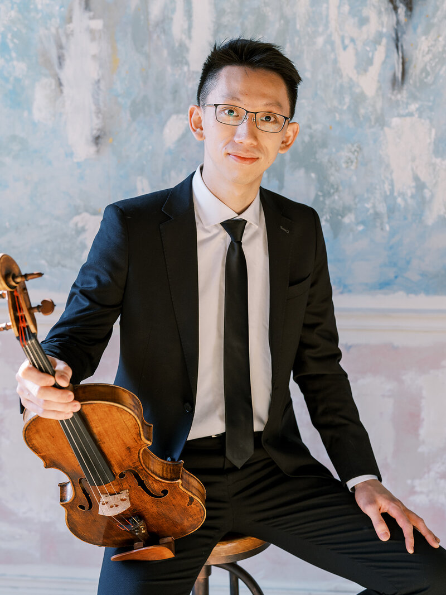
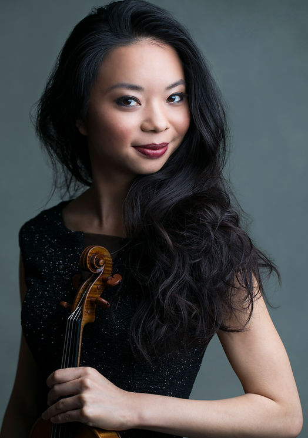
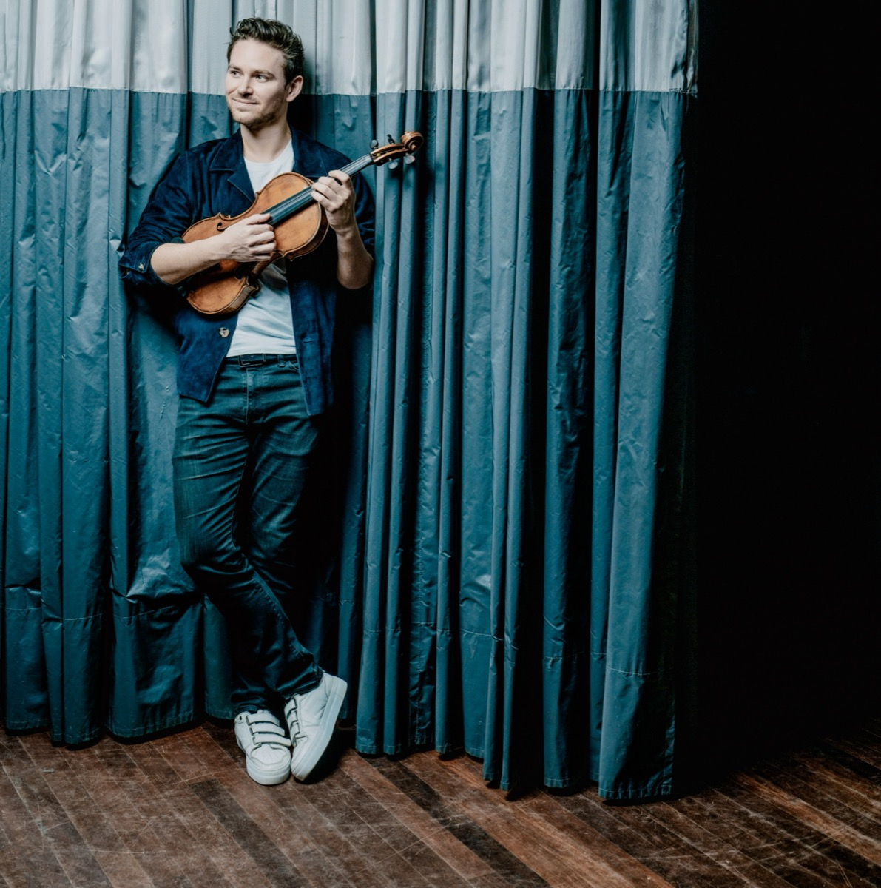
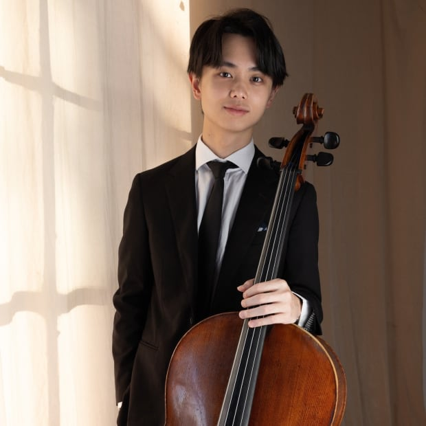
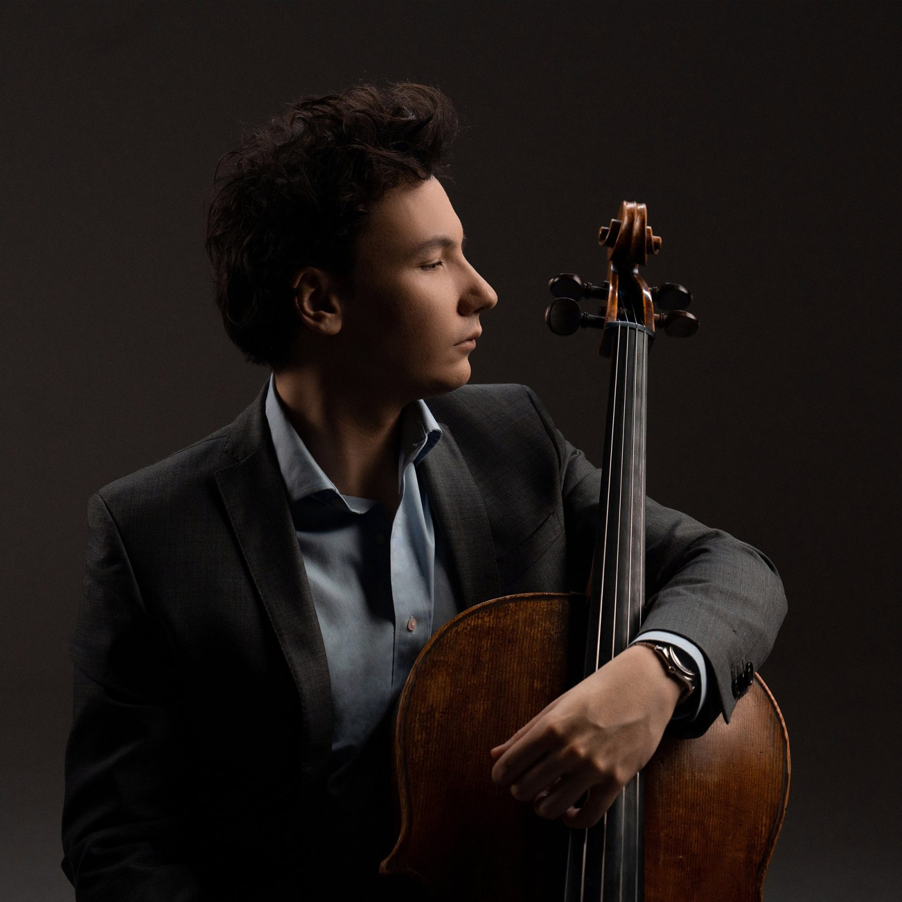
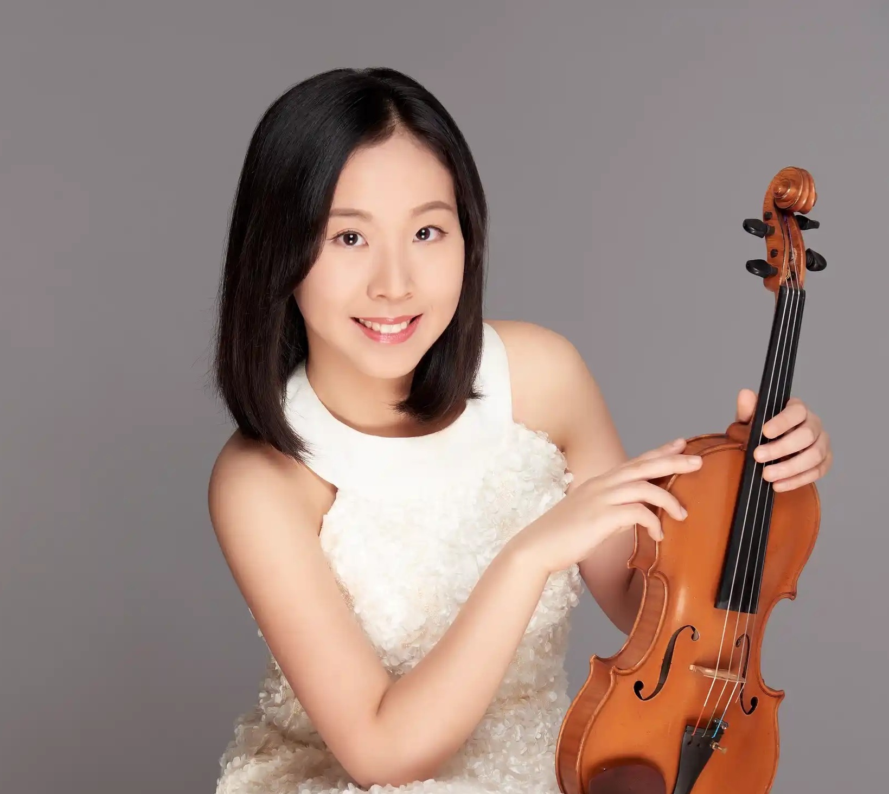
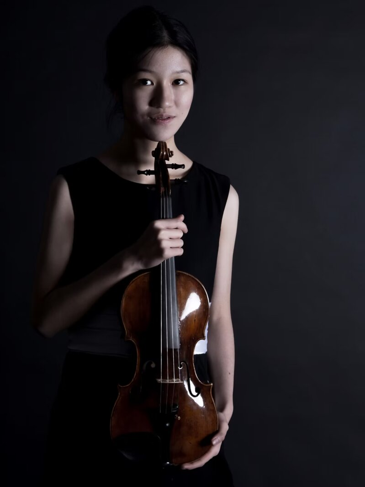
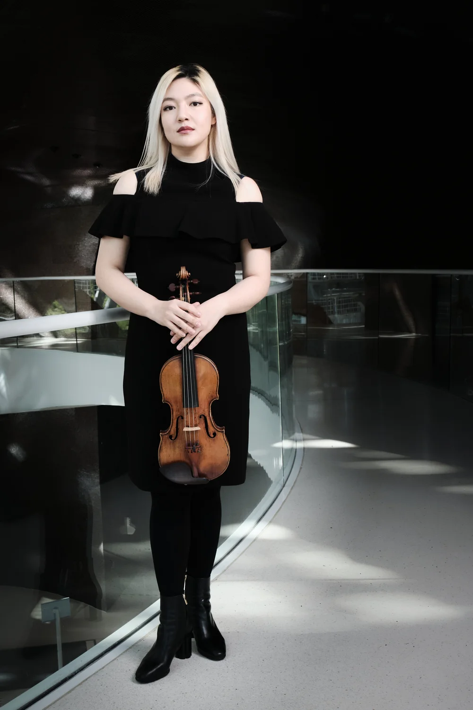
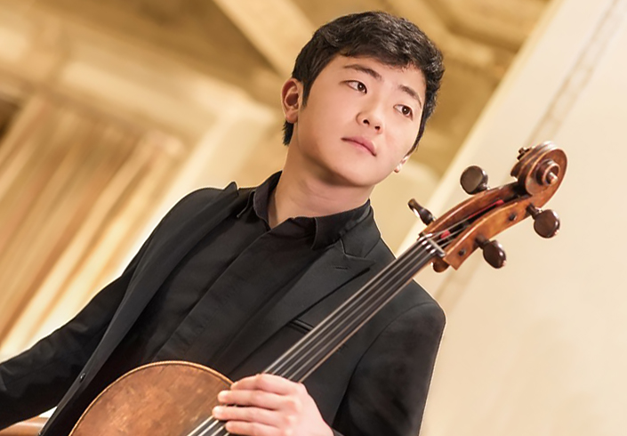
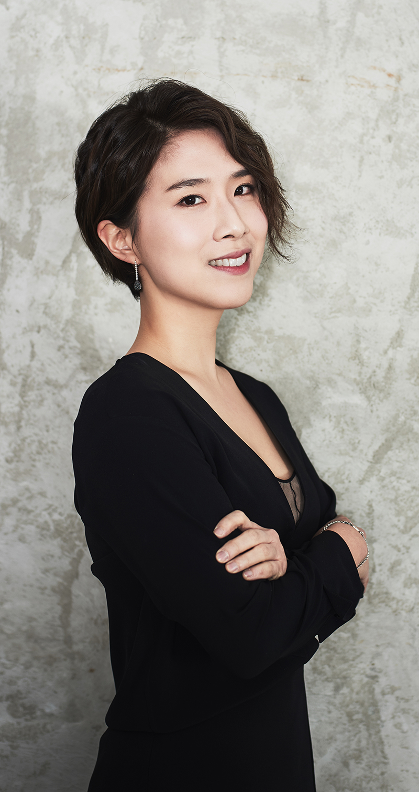

Piano · Artistic Director
Steven Lin
林易
Top prize winner at the Arthur Rubinstein International Piano Competition, Taiwanese-American pianist Steven Lin made his New York Philharmonic debut at age 13. He has since appeared as soloist with the Israel Philharmonic, Baltimore Symphony, San Diego Symphony, and National Taiwan Synphony Orchestra, and given recitals at Carnegie Hall, the Kennedy Center, the Louvre, and the National Concert Hall in Taipei. The New York Times praised his playing as "immaculately voiced and enhanced by admirable subtleties of shading and dynamics." A graduate of The Juilliard School and the Curtis Institute of Music, Lin is a co-founder and Artistic Director of Opus Formosa, dedicated to connecting musicians across borders and advancing classical music in Taiwan.
stevenlinpiano.com ↗— Listed alphabetically by last name —

Violin
Boris Borgolotto
Violin
A French violinist acclaimed for his vivid, expressive playing and commanding stage presence, Boris Borgolotto is the winner of the First Prize at the IBLA Foundation International Competition in New York. He has performed at Carnegie Hall, Philharmonie de Paris, Wigmore Hall, and the Amsterdam Concertgebouw, collaborating with world-class conductors including Myung-Whun Chung, Ton Koopman, and Joe Hisaishi.

Viola
Chih-Ta Chen
陳志達
Chih-Ta Chen is a member of the Terra String Quartet. The quartet won the 2025 Naumburg Chamber Music Award, took Second Prize at both the Bordeaux International String Quartet Competition and the Wigmore Hall International String Quartet Competition, and will make its Carnegie Hall debut recital in 2027. A graduate of the Curtis Institute of Music as a Jean J. Sterne and Edwin B. Garrigues Fellow, he studied with Roberto Díaz, Hsin-Yun Huang, Edward Gazouleas, and Misha Amory, and previously attended the New England Conservatory and Tainan National University of the Arts.

Violin
Sirena Huang
黃凱珉
"Exquisitely performed." — The New York Times · "A musician's soul that transcends her years." — TED
Taiwanese-American violinist Sirena Huang is the First Prize winner of the 2022 International Violin Competition of Indianapolis, and previously won top prizes at the International Tchaikovsky Competition for Young Musicians (2009) and the Elmar Oliveira International Violin Competition (2017). She has performed with the New York Philharmonic, Cleveland Orchestra, and Shanghai Symphony Orchestra, and holds degrees from Juilliard (studying with Itzhak Perlman) and Yale University.

Viola
Adrien La Marca
"A genuinely pure talent." — Financial Times · "The new hero of the viola." — Le Monde
French violist born in Aix-en-Provence. First Prize winner at the William Primrose, Lionel Tertis, and Brahms international competitions, and in 2016 became the first classical musician to receive the French Fondation Lagardère Prize. He studied at the Paris Conservatoire, and in Leipzig and Berlin under Tatjana Masurenko and Tabea Zimmermann.

Cello
Eugene Lin
林恩俊
Second Prize winner at the Trondheim International Chamber Competition, and a semi-finalist at both the Queen Elisabeth Cello Competition and Geneva International Competition. Now a cellist with The Philadelphia Orchestra, he has substituted with the Chicago Symphony and Pittsburgh Symphony, and previously held principal cello positions with the Pacific Music Festival, American Youth Symphony, and Colburn Orchestra. A graduate of the Colburn Conservatory, he studied under cellist Clive Greensmith.

Cello
Edgar Moreau
French cellist Edgar Moreau, born in Paris in 1994, won the Young Soloist Prize at the Rostropovich Cello Competition at age 15, then Second Prize at the International Tchaikovsky Competition at age 17. He has since received two of France's highest classical music honors: the Victoires de la musique classique Révélation soliste instrumental (2013) and Soliste instrumental de l'année (2015). He studied under Philippe Muller at the Paris Conservatoire and has been signed to Erato Records since 2013. From 2015 to 2018 he was an artist of the Junge Wilde series at Konzerthaus Dortmund. He performs on a 1711 David Tecchler cello, a gift from his late father.

Violin
Belle Ting
丁章媛
"When she plays, it seems as if every piece of music was written for her." — Ivry Gitlis
Belle Ting has won top prizes at major international competitions, including First Prize and Best Interpretation at the Belgian International Violin Competition, First Prize at the Cooper International Violin Competition, Second Prize and Special Interpretation Prize at the Brahms International Music Competition, and Third Prize with Audience Award at the Khachaturian International Violin Competition. She has performed as soloist with the Cleveland Orchestra, Danish Odense Symphony, Moscow Philharmonic, and Armenian National Symphony, appearing at the Vienna Goldener Saal and major international festivals including Verbier and Progetto Martha Argerich.

Violin
Sophie Wang
王子欣
Taiwanese violinist born in 1999, Sophie Wang is a First Prize winner at the Andrea Postacchini, Louis Spohr Young Violinists, and Wolfgang Marschner international violin competitions. She has performed with the National Symphony Orchestra Taiwan, Evergreen Symphony Orchestra, Philharmonie Baden-Baden, and Neue Philharmonie Frankfurt under conductors including Reinhard Goebel and Charles Olivieri-Munroe, at venues such as the Konzerthaus Berlin, Tonhalle Zürich, Festspielhaus Baden-Baden, and the National Concert Hall in Taipei. A graduate of the Hochschule für Musik Hanns Eisler Berlin, she studied with Ning Feng, and previously with Pierre Amoyal, Boris Kuschnir, Igor Ozim, and Rainer Kussmaul.
sophiewang.de ↗Piano Trio
Trio Seoul

Violin
Jinjoo Cho
Korean-American violinist and First Prize winner at the Indianapolis, Montreal, and Buenos Aires international competitions. She has performed with the Cleveland Orchestra, Montreal Symphony, and Seoul Philharmonic, appearing at Carnegie Hall and the Aspen Music Festival. She is Associate Professor of Violin at Northwestern University's Bienen School of Music and Artistic Director of Encore Chamber Music.
jinjoocho.com ↗
Cello
Brannon Cho
Korean-American cellist and First Prize winner of the 6th International Paulo Cello Competition, with top prizes at the Queen Elisabeth, Naumburg, and Cassadó competitions. The Boston Classical Review has praised his "burnished tone, spellbinding technique, and probing musical mind." He has performed at Carnegie Hall and Wigmore Hall, and plays a rare 1668 Antonio Casini cello.
brannoncho.com ↗
Piano
Kyu Yeon Kim
Korean pianist and prize winner at the Dublin, Queen Elisabeth, Cleveland, and Geneva international piano competitions. She has performed with the Philadelphia Orchestra, Cleveland Orchestra, and Seoul Philharmonic, with appearances at Carnegie Hall in New York and the Concertgebouw in Amsterdam. She is Associate Professor of Piano at Seoul National University.
kyuyeonkim.co.kr ↗More Artists to be Announced
更多藝術家即將公布
Festival
Opus Formosa Festival — Edition 2026
September 4–16, 2026 · Taipei · Kaohsiung · Taichung
View Programme & Venues →